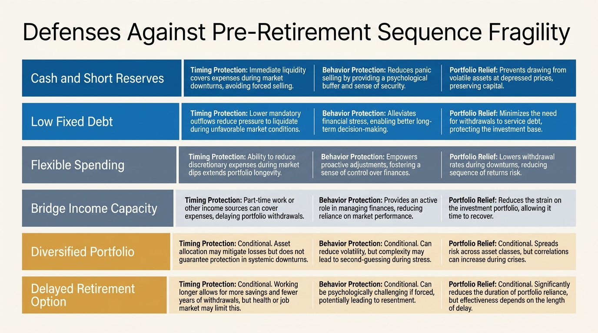

Sequence Risk Before Retirement: The Fragility Nobody Prices Early Enough
Households usually learn sequence risk through retirement illustrations that begin on day one of retirement. That frame is too late. The real danger starts earlier, when a household is near the handoff from accumulation to dependence, but still assumes a bad market is merely an unpleasant delay rather than a structural hit to future freedom.
Sequence risk is often described correctly but incompletely. The basic idea is established: bad returns early in retirement can do more damage than equally bad returns later because withdrawals lock losses into the base. The stronger claim, and the one that matters operationally, is that the sequence problem starts before retirement because pre-retirement balance sheets can already be fragile in the same direction. Contributions may be peaking, flexibility may be falling, parents or children may need support, mortgage or housing carry may still be high, and human-capital recovery time is shorter. A large drawdown in that zone can change not just portfolio values, but the retirement plan itself.
That is why the topic is not only about markets. It is about margin. A household with low fixed costs, high savings slack, flexible retirement timing, and some ability to keep earning can absorb a weak return sequence differently from a household that arrives at the same market with high commitments and little room to delay withdrawals. Sequence risk is not one universal percentage. It is the interaction between returns and the elasticity of the household.
Core thesis: the real fragility is entering retirement transition with too little margin. Market losses matter, but they become dangerous mainly when they collide with high fixed costs, low cash reserves, illiquid wealth, and little willingness or ability to postpone the draw phase.
Why the standard retirement frame misses the earlier hazard
The usual retirement projection treats pre-retirement years as accumulation and post-retirement years as distribution. Real households do not experience such a clean switch. The final working decade often combines the worst of both worlds: large market exposure, high lifestyle lock-in, peak tax complexity, children or elder-care spillovers, and a shorter runway to recover from a major hit. If a drawdown arrives there, the problem is not only that the account value is lower. It is that the household may have to retire later, save more aggressively into a falling market, cut spending at the wrong time, or take more risk than intended just to preserve the original plan.
That is why a pre-retirement drawdown can act like a shadow withdrawal even before formal retirement begins. The lost capital still has to be replaced by something: extra work, lower spending, lower bequests, lower lifestyle, or higher risk. The sequence problem is already active because time, flexibility, and labor capacity are all being repriced together.

The real variables are not only returns
Two households can face the same market and experience very different sequence outcomes. The first has low debt, a paid-down home, moderate spending, large reserves, and some ability to work part-time if needed. The second has concentrated equity compensation, high housing carry, thin cash, children still on the balance sheet, and a rigid retirement date anchored to burnout. The second household has more sequence fragility even if the spreadsheet headline looks stronger at the starting point.
This is why sequence risk belongs beside The Retirement Age Lie, The Liquidity Illusion, and The Cost-of-Capital Trap. A drawdown is not only a return event. It is a financing event, a timing event, and often a behavioral event. Once the household has to sell into weakness, borrow against stress, or defer action because reserves were too small, the damage exceeds the portfolio chart.
| Household layer | What raises sequence fragility | What lowers it |
|---|---|---|
| Spending structure | High fixed costs and inflexible commitments | Elastic discretionary budget and low carry |
| Liquidity | Thin reserves and illiquid asset mix | Cash buffer and clean access to low-friction assets |
| Labor optionality | Hard retirement date and weak re-earning path | Flexible work horizon and bridge-income capacity |
| Portfolio design | Concentration and weak defense assets | Diversification and planned reserve segmentation |
Why late accumulators are especially exposed
Sequence risk hits hardest when households assume that the final decade of saving can compensate for earlier under-saving without a corresponding increase in resilience. This can work in a strong market. It is fragile in a weak one. If most expected retirement readiness depends on a narrow set of high-return years near the finish line, the plan is more exposed than it appears. The issue is not only arithmetic. It is path dependence. A poor return sequence near retirement changes the feasible set of next choices.
That is also why generic advice to simply stay invested is not sufficient. Staying invested is often correct. It is not a full plan if the rest of the household architecture forces bad decisions elsewhere. A person who stays invested but has to raid reserves, refinance badly, or take concentrated employer risk to compensate has not really escaped sequence pressure. It has simply moved to another part of the balance sheet.

What an actual defense stack looks like
The best sequence defenses are often unglamorous. More true liquidity. Lower fixed carry. Retirement-date flexibility. A smaller mismatch between essential spending and safe or highly reliable cash flow. Cleaner diversification. Fewer assumptions that one asset class, one employer, or one liquidity event will rescue the plan. In practice, this often means creating a pre-retirement buffer that can absorb one bad market phase without forcing a reset of the entire life plan.
That does not mean hoarding cash indefinitely. It means segmenting capital by job. Some capital exists to compound. Some exists to defend timing. Some exists to keep a bad market from becoming a forced sale. Households that blur those roles too aggressively often discover sequence risk only after they realize the portfolio was carrying too many contradictory responsibilities at once.
What is known and what remains uncertain
What is known: early distribution losses matter, path dependence matters, and behavioral stress rises when households lack reserves or flexibility. What is inferred but not perfectly measurable in one formula: the degree to which pre-retirement margin, work optionality, and family obligations alter effective sequence risk before retirement officially begins. That does not make the concept speculative. It means the cleanest models still understate household-level fragility because real life adds constraints that textbook glide paths usually ignore.
The practical question is not whether markets will sometimes deliver a bad sequence. They will. The useful question is whether the household has designed a retirement transition that can survive one without immediately rewriting everything else. If the answer is no, the sequence problem has already begun even if retirement is still a few years away.
This analysis draws on the retirement-finance literature on path dependence and withdrawal sensitivity, combined with household-balance-sheet work on liquidity, debt carry, and income flexibility.
The stronger inference in this piece is that sequence risk should be modeled as a pre-retirement fragility problem as well as a post-retirement withdrawal problem, because the same drawdown can force radically different outcomes depending on household slack.
The unresolved issue is not whether sequence matters. It is how best to operationalize labor optionality, family obligations, and spending elasticity inside planning tools that still rely too heavily on clean portfolio assumptions.